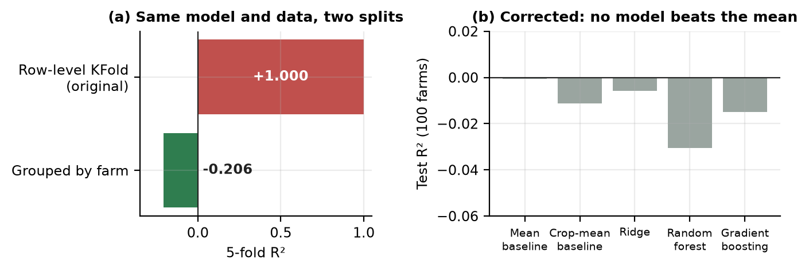
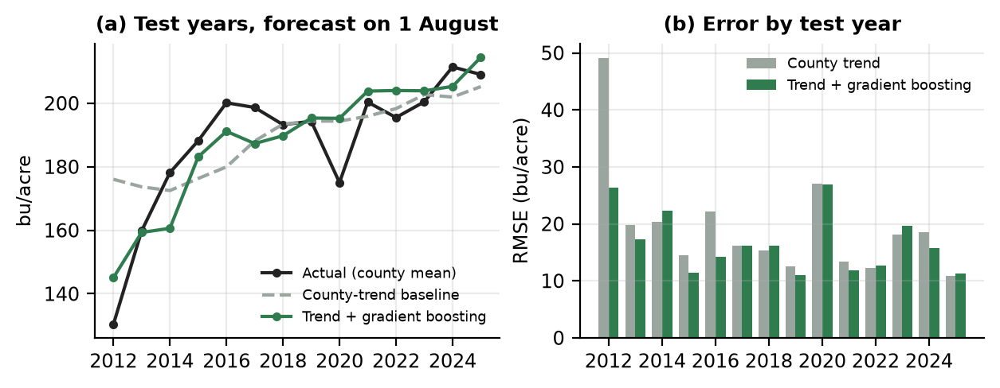
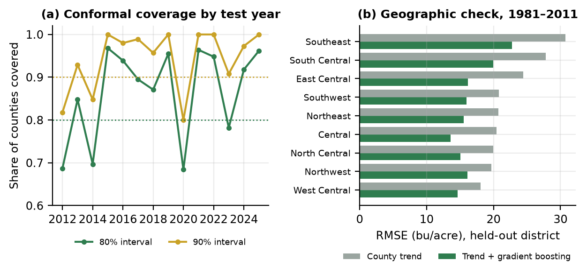

Abir Ahmmed · Technical report · November 2026 · github.com/devbyabir/harvestmetric
Q1 (Part A): Was the original R² ≈ 1.00 evidence of forecasting ability? Q2 (Part B): On real observational data, does season-to-date weather improve a 1 August forecast of county corn yield beyond simple baselines built from the county's own yield history? Does any improvement hold across years and across regions?
| Part | Source | Terms | In repository |
|---|---|---|---|
| A | Smart Farming Sensor Data for Yield Prediction (A. Soundankar, Kaggle) | Apache-2.0; synthetic | Not redistributed; aggregates only |
| B | USDA NASS Quick Stats: Iowa county corn-for-grain yield, bu/acre, 1926–2025 | CC0 1.0 | Processed panel committed |
| B | NASA POWER daily point API v2.10.3: T2M_MAX, T2M_MIN, PRECTOTCORR, 1981–2026 | Citation required | Features in panel |
| B | US Census Bureau 2024 Gazetteer: county internal points | US Gov. work (17 U.S.C. §105) | Coordinates in panel |
The original working copy (5,000 rows) was verified record-identical to the official Kaggle file (500 rows): dates were reformatted and every record repeated 10 times. Retrieval dates, query parameters and SHA-256 checksums are in data/processed/manifest.json. Raw downloads are re-created by python -m harvestmetric.real.acquire.
With each record present ten times, a row-level KFold places near-certain copies of every test row in training, and flexible models memorise them. I removed exact duplicates, held out 100 farms (20%, stratified by crop) once, and tuned five models with nested, farm-grouped CV on the remaining 400. The forecast point is the sowing date. Season totals, in-season sensor readings, harvest date and growing duration are excluded. A permutation test and bootstrap intervals judge skill. An audit found the data's coordinates contradict its region labels and its columns behave as independent uniform draws. The publisher describes it as simulated.

| Model (at sowing) | CV R² | Test R² | Test MAE kg/ha |
|---|---|---|---|
| Mean baseline | -0.010 | -0.001 | 1,013 |
| Crop-mean baseline | -0.017 | -0.011 | 1,011 |
| Ridge | -0.018 | -0.006 | 1,013 |
| Random forest | -0.063 | -0.031 | 1,021 |
| Gradient boosting | -0.057 | -0.015 | 1,008 |
Answer to Q1: no. Test R² for the CV-selected model is -0.006 (95% CI [-0.060, +0.001]). Predictions collapse to the mean, so low- and high-yield farms are missed by about 1,500 kg/ha. Valid evaluation shows the data contains no learnable yield signal, so no prediction feature is offered.
Unit: Iowa county × year (99 counties). Target: NASS final corn-for-grain yield (bu/acre; 1 bu/ac ≈ 0.0627 t/ha). Forecast date: 1 August of year t. Information allowed: the county's published yields for t−30…t−1, and NASA POWER weather from 1 April to 31 July of year t at the county's Census internal point. Features: a county linear trend fitted to the previous 30 years, last year's deviation from that trend (flagged when unpublished), May–July growing degree-days (10/30 °C), June–July degree-days above 30 °C, April–May, June and July precipitation, and mean July maximum temperature. Leakage controls, enforced in code and tests: weather after 31 July cannot enter a feature, history uses only years before t, no feature uses another county's same-year yield, and identifiers are never inputs. Combined "other counties" rows and withheld values are dropped. Counties not published after 2014 are left unscored rather than imputed.
| Model | CV RMSE | Test MAE | Test RMSE | Test R² |
|---|---|---|---|---|
| Historical mean | 39.7 | 38.2 | 41.6 | -1.31 |
| Previous year | 19.4 | 19.7 | 25.4 | +0.14 |
| County trend | 18.8 | 16.5 | 21.8 | +0.37 |
| Trend + Ridge | 23.4 | 14.2 | 18.9 | +0.52 |
| Trend + gradient boosting | 19.5 | 13.5 | 17.6 | +0.59 |
bu/acre; test = 2012–2025. Selected by CV: Trend + gradient boosting.
| Gain of selected model over | RMSE gain | 95% CI (years) |
|---|---|---|
| Historical mean | +24.03 | [+16.52, +30.92] |
| Previous year | +7.77 | [+4.33, +11.32] |
| County trend | +4.20 | [-0.00, +9.46] |
Positive = selected model better. Rolling annual refit: RMSE 17.9 vs 21.8, CI [-0.39, +9.34].

The model clearly beats the historical-mean and previous-year baselines. Its gain over the county trend (+4.2 bu/acre, 19% lower RMSE) is positive in 97.5% of year resamples, but the interval reaches zero. In CV the model was worse than the trend (19.5 vs 18.8). The early folds learned from only three disaster years (1983, 1988, 1993) and over-predicted heat losses in 1997, 1999 and 2002, when yields were above trend despite high heat. The weather–yield relationship is not stable across eras, so the gate is not passed. Conformal intervals covered 86.2% (80%) and 94.1% (90%) of test county-years overall (half-widths ±25 and ±33 bu/acre), but only 69% and 68% at 80% in 2012 and 2020. Exchangeability fails within a shock year. In the geographic check the model beat the trend in 9 of 9 held-out districts (RMSE 16.8 vs 22.8). The same seasons appear on both sides there, so this shows spatial transfer, not skill on new seasons.

Weather is taken at a single point per county from a ~0.5° × 0.625° grid. Neighbouring counties often share a cell, and the point ignores where corn is grown. Targets are NASS's current estimates, which can differ from values published in real time. Unpublished counties after 2014 are missing not at random. Fourteen test years give wide intervals. The model set was deliberately small, and richer inputs (soil, planting dates, satellite vegetation indices) were out of scope. Part A uses synthetic data and says nothing about real crops.
The original R² ≈ 1.00 was leakage. On real data, a carefully time-separated evaluation finds that season-to-date weather probably improves 1 August county yield forecasts in drought years, but the evidence does not meet a pre-specified standard: CV across 1997–2011 disagrees, and the test gain is not reliably above zero. The contribution is a reproducible, leakage-tested pipeline that reports this honestly, rather than a headline accuracy number.
Authorship note. The original exploratory notebook was developed during an internship together with a colleague and is not included. This rebuild, data pipeline, evaluation and report were produced by the author with the assistance of an AI coding assistant.
Angelopoulos, A. N., & Bates, S. (2021). A gentle introduction to conformal prediction and distribution-free uncertainty quantification. arXiv:2107.07511.
Kaufman, S., Rosset, S., Perlich, C., & Stitelman, O. (2012). Leakage in data mining: formulation, detection, and avoidance. ACM TKDD, 6(4), 15.
Lobell, D. B., Roberts, M. J., Schlenker, W., et al. (2014). Greater sensitivity to drought accompanies maize yield increase in the U.S. Midwest. Science, 344(6183), 516–519.
Roberts, D. R., Bahn, V., Ciuti, S., et al. (2017). Cross-validation strategies for data with temporal, spatial, hierarchical, or phylogenetic structure. Ecography, 40(8), 913–929.
Schlenker, W., & Roberts, M. J. (2009). Nonlinear temperature effects indicate severe damages to U.S. crop yields under climate change. PNAS, 106(37), 15594–15598.
Soundankar, A. (2025). Smart Farming Sensor Data for Yield Prediction [dataset]. Kaggle. Apache-2.0.
USDA National Agricultural Statistics Service. Quick Stats database, quickstats.nass.usda.gov (retrieved 12 Nov 2026).
NASA Langley Research Center POWER Project, daily point API v2.10.3, power.larc.nasa.gov (retrieved 12 Nov 2026). These data were obtained from the NASA LaRC POWER Project funded through the NASA Earth Science/Applied Science Program.
US Census Bureau. 2024 Gazetteer Files: counties (retrieved 12 Nov 2026).
NOAA National Centers for Environmental Information. Billion-Dollar Weather and Climate Disasters: Central US derecho, 10 August 2020.